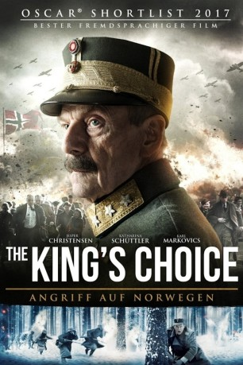

#5972 The King's Choice - Angriff auf Norwegen
 
 IMDB-Wertung: 7.5 / 10
IMDB-Wertung: 7.5 / 10  Metascore: 0
Metascore: 0 
Am 9. April 1940 erreichen die Schrecken des Zweiten Weltkrieges endgültig Norwegen, als die deutsche Armee ohne vorherige Kriegserklärung das Land angreift. König Haakon VII. (Jesper Christensen) flieht daraufhin mit seiner Familie aus Oslo, um sich den Nazis zu entziehen. Von seinem Sohn, Kronprinz Olav (Anders Baasmo Christiansen), wird der Monarch, der sich bisher aus Prinzip aus allen Regierungsgeschäften herausgehalten hat, jedoch gedrängt, die Initiative zu ergreifen. Währenddessen bemüht sich der deutsche Diplomat Curt Bräuer (Karl Markovics) darum, den Krieg zwischen den Ländern mit dem Erwirken einer nahezu bedingungslosen Kapitulation Norwegens doch noch abzuwenden. Haakon muss eine schwere Entscheidung treffen, die nicht nur über sein persönliches Schicksal entscheiden wird, sondern über die Zukunft seines gesamten Volkes...
Jahr: 2016
Dauer: 130 Minuten
FSK:
Land: Norwegen Studio: Pandastorm PicturesTonspuren:
Untertitel: Deutsch,
Auflösung: 1080p (1920x808) Größe: 5437 MB
Genre: Drama, Krieg, Geschichte, Biographie
Regisseur: Erik Poppe
Drehbuch: Lucy Dahl
Soundtrack:
Darsteller:
 Jesper Christensen als H.M. Kong Haakon VII
Jesper Christensen als H.M. Kong Haakon VII Anders Baasmo Christiansen als H.K.H. Kronprins Olav
Anders Baasmo Christiansen als H.K.H. Kronprins Olav Karl Markovics als Gesandter Curt Bräuer
Karl Markovics als Gesandter Curt Bräuer Tuva Novotny als H.K.H. Kronprinsesse Märtha
Tuva Novotny als H.K.H. Kronprinsesse Märtha Katharina Schüttler als Anna Elisabeth, 'Anneliese' Bräuer
Katharina Schüttler als Anna Elisabeth, 'Anneliese' Bräuer Juliane Köhler als Frl. Diana Müller
Juliane Köhler als Frl. Diana Müller Andreas Lust als Oberstleutnant Hartwig Pohlman
Andreas Lust als Oberstleutnant Hartwig Pohlman- Rolf Kristian Larsen als Sersjant Brynjar Hammer
- Erik Hivju als Oberst Birger Eriksen
- Svein Tindberg als Peder Anker Wedel Jarlsberg
- Arthur Hakalahti als Menig Fredrik Seeberg
- Ketil Høegh als Utenriksminister Halvdan Koht
- Gerald Pettersen als Statsminister Johan Nygaardsvold
- Jan Frostad als Stortingspresident Carl Joachim Hambro
- Hans Jacob Sand als Forsvarsminister Birger Ljungberg
- Nicolay Lange-Nielsen als Major Nikolai Ramm Østgaard
- Magnus Ketilsson Dobbe als Prins Harald, 3 år
- Sofie Falkgård als Prinsesse Ragnhild
- Ingrid Ross Raftemo als Prinsesse Astrid
- Lage Kongsrud als Prins Harald, 8 år
- Tone Danielsen als Sigrid Sælid
- Krister Kern als Waldemar Johansen
- Joakim Jørgensen als Luftattaché Eberhard Spiller
- Herbert Nordrum als Menig Frode Vestli
- Espen Sandvik als Kaptein Magnus P. Sødem
- Eric Vorenholt als Arne Hammer
- Andree Solvik als Hauptmann Erich Walther
- Randolf Walderhaug als Kaptein Bjart Ording
- Tom Styve als Ole B. Dahl
- Torfinn Nag als Politimester Kristian Welhaven
- Benjamin Lønne Røsler als Menig Helge Løken
- Ragnhild Udbye Lefstad als Ragni Østgaard
- Karl Flymann als Johan W. Klüver
- Erland Bakker als Ivar Iversen
- Kjetil Langmyr als German fallschirmjäger
- Morten Enger als Soldat
- Odd-Audor Bentsen als Soldat
- Jarl Kjetil Tøraasen als Soldat
- Jens Finni Morstad als Soldat
- Anders Vegdal Bjerke als Soldat
- Mikkel Gram Bakker als Einar Østgaard
- Johan Ivarson als Leutnant Kurt Gröschke
- Udo Schenk als Adolf Hitler, Stemme
- Jan Petter Dickman als Ivar Lykke
- Aslak Maurstad als Ordonnans
- Linus Widner als Christian P. Reusch
- Zoe Witt als Clara Bräuer
- Raymond Bless als Løytnant August Bonsak
- Alexander von Bremen als Ola
- Leiv Ose als Tysk kontorsjef
Datei: X:\2016(G-M)\King's Choice - Angriff auf Norwegen, The (2016, FSK, 1920x808).mkv seit 16.04.2017
Festplatte: HD 2016(A-Z)
 Es gibt insgesamt 164 Filme in der Gruppe '2016(G-M)'
Es gibt insgesamt 164 Filme in der Gruppe '2016(G-M)'